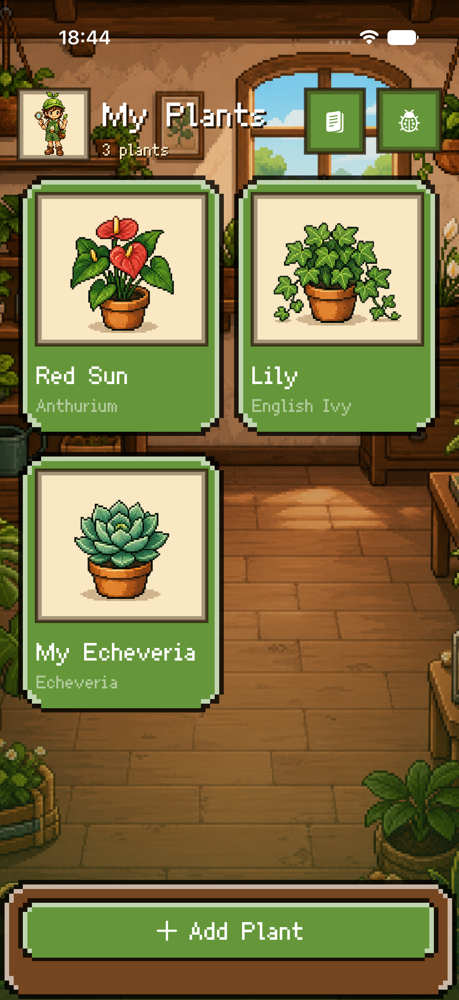
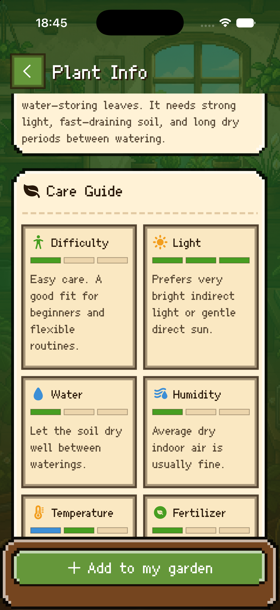
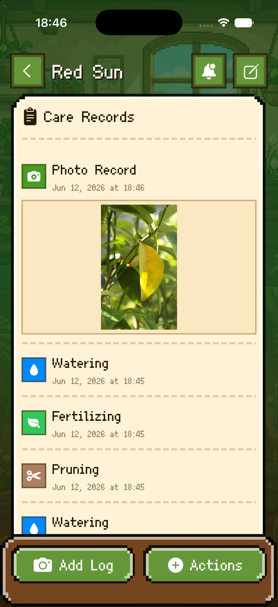
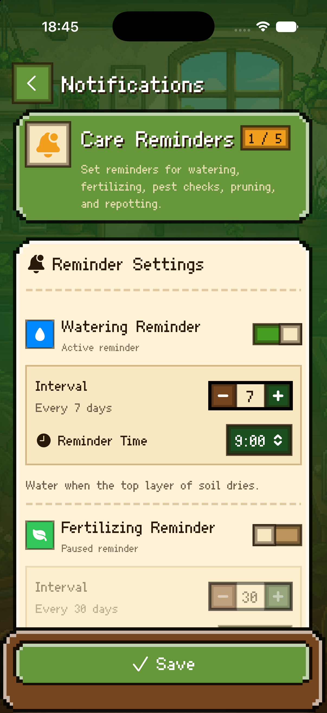

Grow a pixel garden
Turn every saved plant into a playful collection card with health, reminders, and a room-like home screen.
Version 2.0
Build a tiny digital garden, learn what every plant needs, keep care records, and never miss the next watering window.


Turn every saved plant into a playful collection card with health, reminders, and a room-like home screen.
Browse compact plant profiles with light, watering, humidity, temperature, and beginner-friendly tips.
Log watering, fertilizing, pruning, repotting, and diagnosis moments in one readable plant history.
Screenshots


About Plantory
Plantory helps new plant owners move from guesswork to a simple care loop: save the plant, understand the guide, record what happened, and get reminded before care slips.